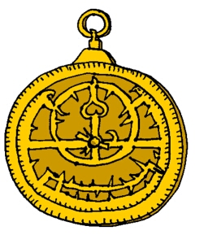

Developed in classical Greece, the planispheric astrolabe reached prominence as a powerful observational tool during the Middle Ages (c. 12th century) after a period of development and improvement by Islamic astronomers. The astrolabe remained in common use until about 1650 AD.
The basic components of the astrolabe are a pair of thin disks, usually with a diameter of around 15cm (although this did vary). A fixed disk (the mater) represented the viewer, while a movable disk (the rete) corresponded to the celestial sphere.
Astrolabes provided information on the location of the Sun (including the times of rising and setting), planets and some of the more prominent stars, and could even be used to determine the time – a multiple-purpose calculating tool well before the invention of computers. Many astrolabes were works of art, made from brass by some of the great instrument makers of the 15th and 16th centuries.
The altitude of a celestial object was determined by hanging the astrolabe vertically and sighting along a rotatable alidade (a pointer). 0o correponded to an object on the horizon, while 90o was an object directly overhead (at the zenith). Later astrolables used the same pointer to help identify the location of the Sun along the ecliptic, by aligning it with one of the dates engraved on the back of the mater.
| Astrolabes could only show one hemisphere of the night sky, with the north celestial pole corresponding to the centre of the mater. The night sky (i.e. circles of altitude) were then projected onto the disk, with the outer edge of the mater corresponding to the limiting declination of the device. The rete was used to locate the ecliptic – the path of the Sun through the sky, and the location of several prominent stars. Once the altitude of a star was determined (using the alidade), the rete was rotated until the star was aligned with the correct ‘circle’ of altitude. The centre of the rete was off-axis, to allow for the different stars that appeared throughout the year. As an observer moved to different latitudes, the actual spherical projection required to map the night sky to a flat disk changed. Rather than limiting an astrolabe to a single observing location, interchangable disks were manufactured: called climates. The observer would choose the climate suitable for their latitude, and the measured altitudes of stars would be consistent with the coordinate lines engraved on the astrolabe! |
 |
‘A Treatise on the Astrolabe’ is one of the earliest known technical manuals written in English. Attributed to Geoffrey Chaucer (c. 1391), although he probably did not write all of it, the work describes the construction and use of an astrolabe.